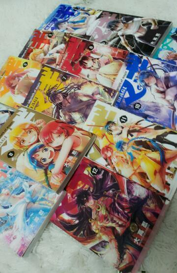

ほっほーーぃ★
ろってぃー♪でぃす。
はろう( ・ω・)ノ
皆様 お元気でしゅか?笑
ちゃくちゃくとっ,
新曲の仕上がりが
進んでいっておりますよん♪
この前も せいらりんと
練習したりしました。
こうやって、
ダンスが上手く踊れない時とか
まひろに頼ってくれるのは
本当に嬉しい気持ちになります(*´ω`)
最終的に ダンス,歌詞,衣装等
全部そろったら
どうなるだろう?
自分たちも、
WAKWAKな気持ちっ)))
そして,前回のblogの
コメント。
皆様 たくさんの心深いお言葉
ありがとうございます。
全て読ませて頂きました。
楽しく元気に自分らしくっ!!!
そうした方が自信も出てくるっ♪
自分磨きも頑張って
目標体重まで あと -１キロ ☆
ちなみにね,
今ね、
みくもとね,
身長も体重も
同じなんだあ(・ω・)♪わら
あっ!
そして 7日から始まりました。
『マギ☆』

見ましたかぁ〜ん=・ω・=?
毎週 日曜 17時からです★
ほんなら、
あーしは、そろそろ
寝らんとなあ〜´・ω・))♪
寝れない人おるぅ〜?
まひろも最近寝れないんだよねぇ。
でも、朝は起きるの
はやいぜぃ`・ω
ほなっ おやすみなさい〃ω〃ノシ
大好き。